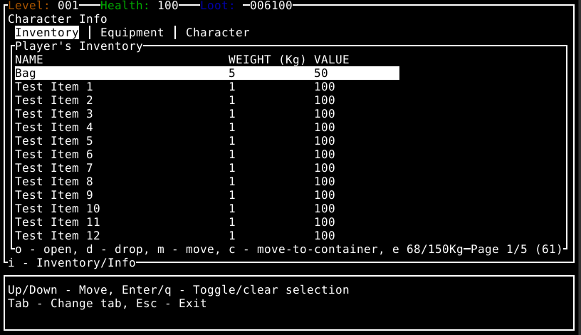

ARQ-Rust Callback Redesign
The Original UI setup
Everything I talk about here is based on the code as of Commit 302f2e9
Recently I've been working on redesigning some of the UI structure for my ARQ-Rust project
Originally I used hierarchical pattern of Command -> View -> Framehandler. If we take the "Character Info" screen for example (which is responsible for displaying the player inventory / equipment / stats):
This window is displayed when you hit the 'i' key while looking at the map view. The input handling in the game engine then starts the InventoryCommand, which is given a copy of:
- A mutable reference to the current Level
- A mutable reference to the current UI
- A mutable reference to the current Terminal Manager (for direct UI/IO operations on the terminal)
This InventoryCommand then creates the
- CharacterInfoView
- CharacterInfoFrameHandler (along with it's underlying ContainerFrameHandler(s))
The "View" and "FrameHandler"(s) take over control at this point once we call begin(..)
let mut character_info_view = CharacterInfoView { character: player, ui: &mut self.ui, terminal_manager: &mut self.terminal_manager, frame_handler, callback: Box::new(|_| {None}) };
character_info_view.set_callback(Box::new(|data| {
let mut current_inventory = level.characters.get_player_mut().unwrap().get_inventory_mut().clone();
handle_callback(CallbackState { level, container: Some(&mut current_inventory), data })
}));
match character_info_view.begin() {
Ok(_) => {
updated_inventory = character_info_view.frame_handler.container_frame_handlers.get(0).unwrap().container.clone();
},
Err(e) => {
return Err(ErrorWrapper::from(e))
}
}
The CharacterInfoView then takes complete control of the I/O and rendering from this point, and is responsible for:
- Rendering the "base" UI that's visible by default (the main bordered window, the stat bars, the console window, etc.)
- calling the CharacterInfoFrameHandler with the relevant state to allow it to render to the UI
- Blocking for input / handling input (including passing anything not handled by the view down to the relevant frame handler, which is the majority of inputs)
As you can see, this is very much a simple stateful design with different "views" or "contexts" that take control via an IO loop
Actions within the CharacterInfoView such as moving items modify the world state via callbacks. The CharacterInfoView calls handle_input(..) on the frame handler (the underlying ContainerFrameHandler), which then returns a result which is passed into a pre-registered callback function on the command in order to update the world state
// Within: inventory_command.rs
// Registering the callback to the command when creating the view
let mut character_info_view = CharacterInfoView { character: player, ui: &mut self.ui, terminal_manager: &mut self.terminal_manager, frame_handler, callback: Box::new(|_| {None}) };
character_info_view.set_callback(Box::new(|data| {
let mut current_inventory = level.characters.get_player_mut().unwrap().get_inventory_mut().clone();
handle_callback(CallbackState { level, container: Some(&mut current_inventory), data })
}));
// Within: character_info_view.rs
// and later.. the view triggering the callback
fn trigger_callback(&mut self, data: ContainerFrameHandlerInputResult) {
let result = (self.callback)(data);
self.handle_callback_result(result);
}
This works fine but has several caveats:
- Rendering of the UI only happens on each loop passthrough (as the View has sole ownership over the UI and blocks for input before looping again). If we wanted to add background animations / effects this would be very difficult if they are not just using terminal builtins (like flashing characters)
- There is a lot of "wiring" that must be done to ensure the correct flow of callbacks / rendering / IO
- Each "view" is completely responsible for rendering the entire "frame" (the entire screen you see), so there's likely to be a lot of duplicated boilerplate code (even if using utils) just to render everything else first
Redesigning this
Due to the constraints outlines above, I wanted to implement an "Event Based" system which works like so:
- A "Command" such as
CharacterInfoCommandwhich stores the Level, UI, and Terminal Manager as before withInventoryCommand -
A Tokio channel is created to allow communicating between the command and UI elements
The sender and receiver in this channel are passed around / hooked up where required to allow listening for / sending of events without the need for IO blocking (so we can render asynchronously!)// This is a special channel designed to allow widget data to send events back to this command // So that we can properly perform actions like closing the container display, opening a child container or taking items let (container_event_sender, container_event_receiver) = mpsc::unbounded_channel(); - We create a ratatui StatefulWidget which can be directly rendered to the screen by the ratatui TUI library I use (instead of only using some custom widgets, ratatui builtin widgets, or direct terminal rendering like the original ARQ did)
- The CharacterInfoWidget is added the generic UI code:
// Add the container widget to the UI let stateful_widgets = self.ui.get_stateful_widgets_mut(); stateful_widgets.push(StatefulWidgetType::CharacterInfo(character_info_widget)); - The Command uses a new
CharacterInfoWidgetDatawhich holds the "state" for the CharacterInfoWidget. This widget data is then passed to the UI code when calling to re-render. This generic UI code then renders all widgets (including our newly added CharacterInfoWidget) and passes this data to itwhile running { if let Some(widget_data) = &mut self.widget_data { terminal_manager.terminal.draw(|frame| { debug!("Rendering Character Info Screen"); ui.render(None, UIViewMode::CharacterInfo(widget_data.clone()), frame); })?; //... - In order to handle keyboard inputs without blocking in the command, there's now a
TerminalEventHandlerwhich makes use of Termion'stermion::async_stdin().events();to get input events asynchronously and then send these along the channel sender - The CharacterInfoCommand will listen for events (such as keypressed) and pass those into the widget data for handling, the data model can then directly apply updates to the state before it is passed back to the UI for rendering. This way input or action you take such as moving up/down the inventory, or dropping items, is sent along the channels.
- The Command keeps control over the program flow via the running loop until you close the character info view, much like the previous "View" would have done. As the command has access to the level, any changes in state can be persisted to the game world here.
This approach has several advantages over the old one:
- Rendering of the UI can theoretically be done asynchronously (the command runs asynchronously and can choose whether to block for input from a channel or not). This opens the door to future animations or just updating different widgets in the background
- Everything that was previously a View / Frame Handler can be converted into a StatefulWidget and "registered" with the main UI code, allowing multiple widgets to be rendered at the same time automatically. This also means we no longer have to worry about "bootstrapping" the UI and rendering everything else before our specific components
- Much less wiring is needed for input / event handling as we can just send/receive on the relevant channel. Multiple copies of a channel sender can also be used to allow child UI components to be able to send events in the same way as parents (instead of needing to proxy / pass data up and down the stack)